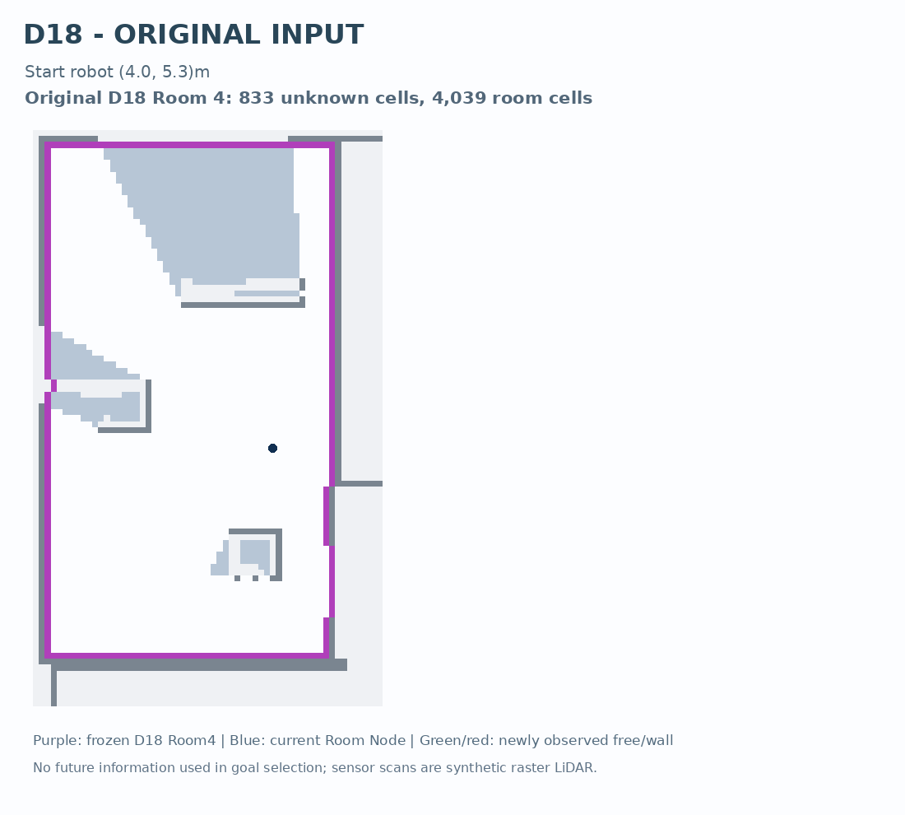
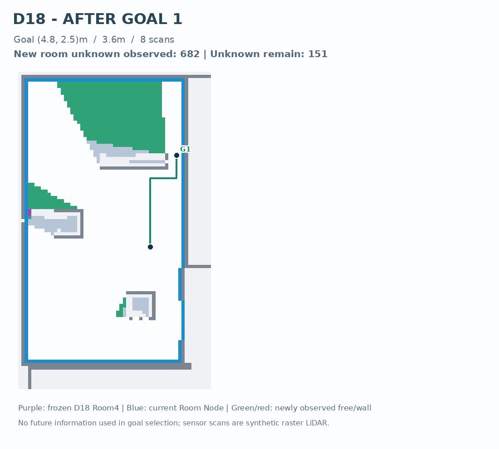
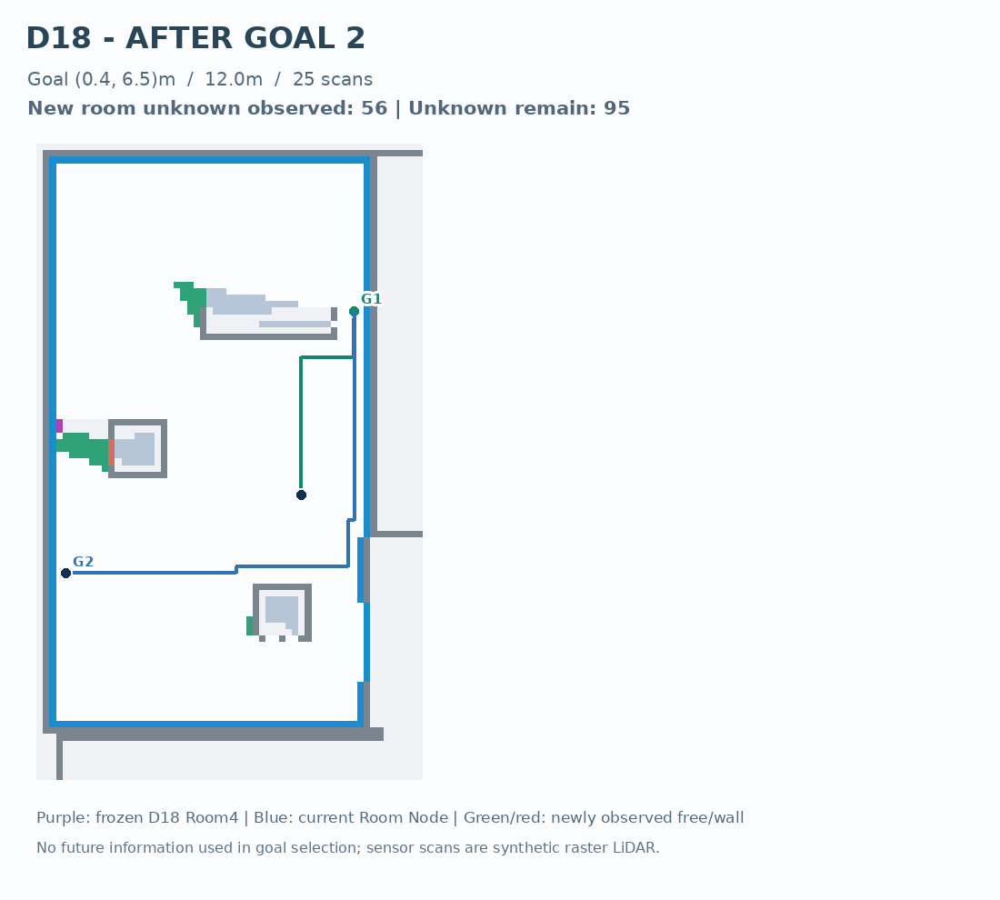
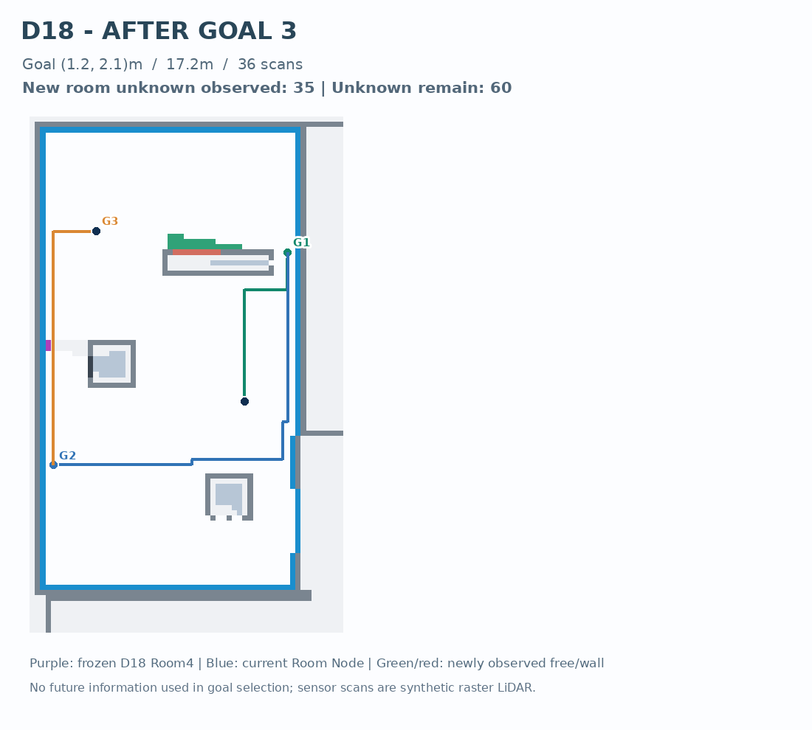
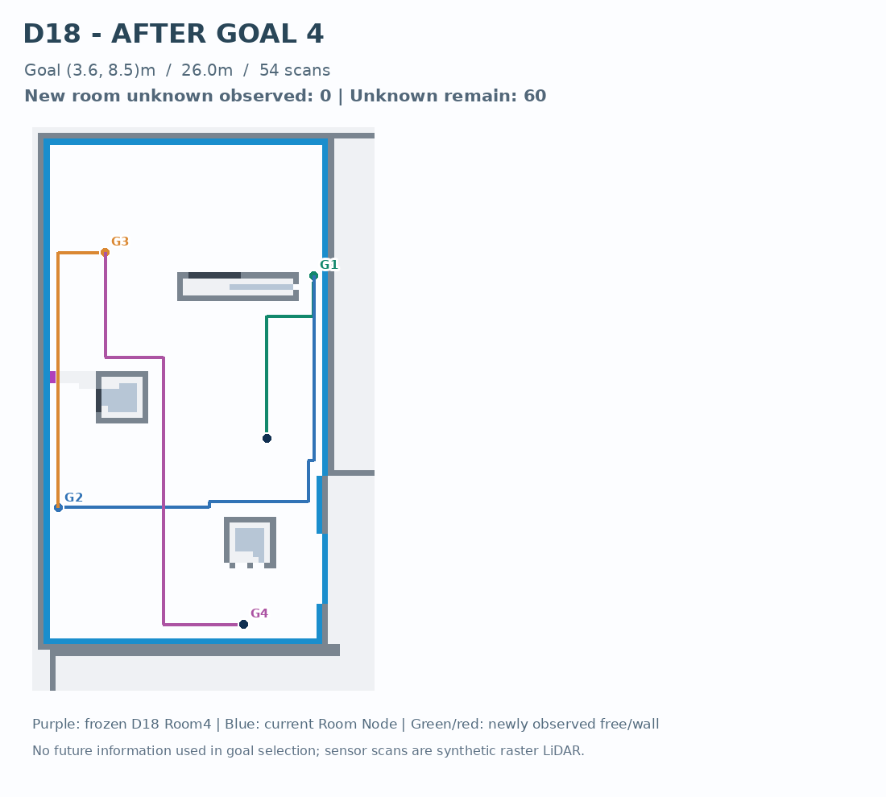
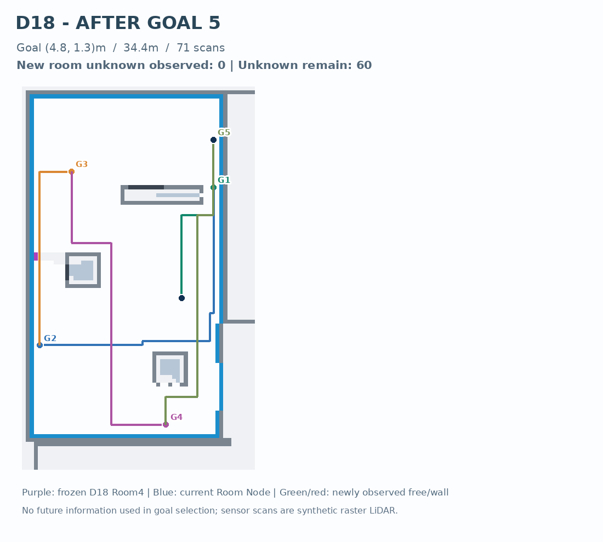
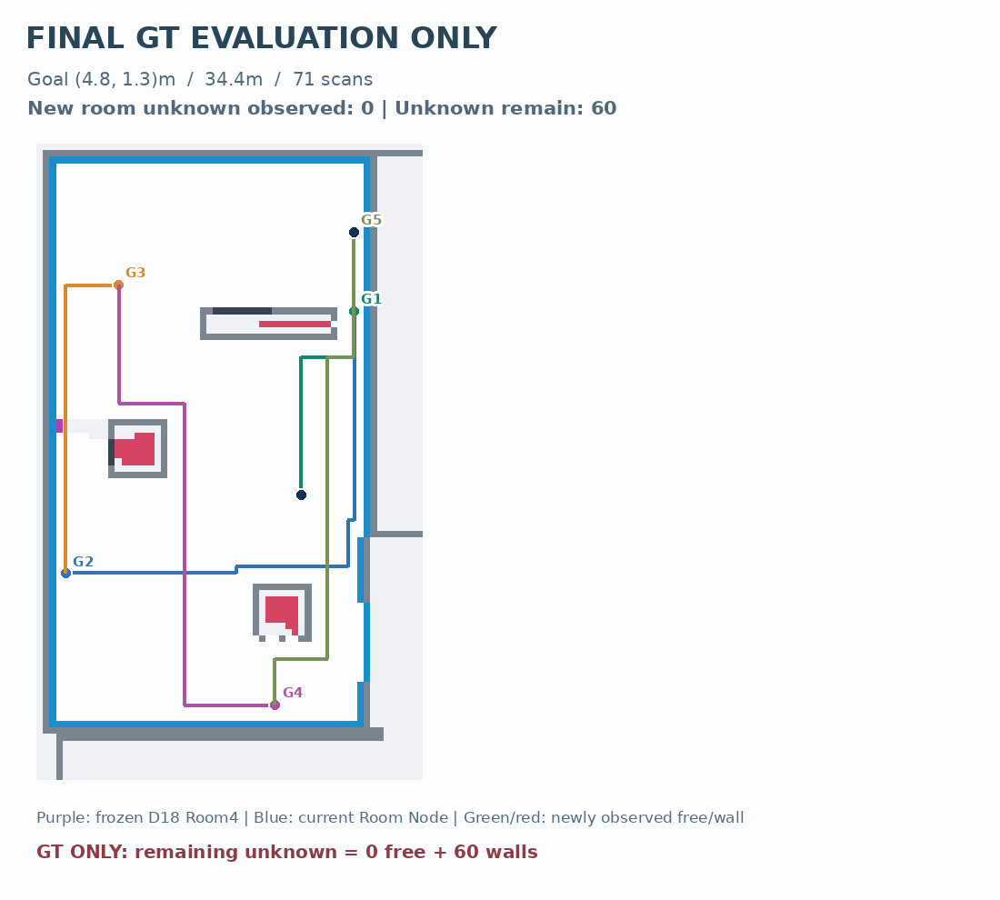

Thuật toán khóa nguyên phiên bản từ D02. Sử dụng observed + LaMa + Room Node D18; robot đi theo chuỗi có cam kết, quét LiDAR mỗi 0,5m, chạy lại LaMa/R4.1 và chỉ tính lại goal khi chuỗi hết hiệu lực. GT chỉ dùng trong cảm biến ẩn và đánh giá sau cùng.
End status: DEFER_STALLED_WITH_UNRESOLVED_MISSION · Goals: 5 · Distance: 34.4 m · Scans: 71 · Room unknown: 60.
| # | Actual goal xy | Distance | Observed room unknown | Decision following scan |
|---|---|---|---|---|
| 1 | [4.8, 2.5] | 3.6 m | 151 | COMMITMENT_CONTINUED |
| 2 | [0.4, 6.5] | 12.0 m | 95 | NEW_COMMITMENT |
| 3 | [1.2, 2.1] | 17.2 m | 60 | NEW_COMMITMENT |
| 4 | [3.6, 8.5] | 26.0 m | 60 | COMMITMENT_CONTINUED |
| 5 | [4.8, 1.3] | 34.4 m | 60 | DEFER_STALLED_WITH_UNRESOLVED_MISSION |







GT-only panel is retrospective evaluation; never an input to G2/LaMa/Room Node. Synthetic visibility not identical to MapEx native LiDAR. No claim of globally shortest exploration or on-robot safety.